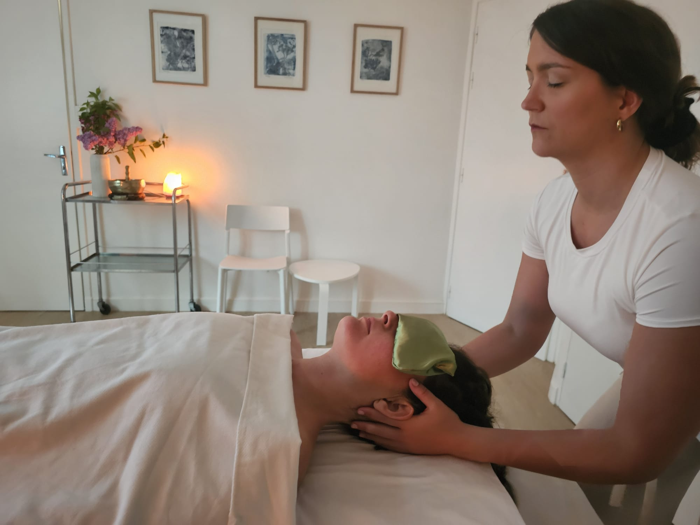

L'espace
Un espace pour déposer ce qui est là.
Pour laisser le corps se détendre, sans attente.
Ici, on ralentit.
On revient aux sensations simples.
Les séances se déroulent dans un espace calme et confidentiel.
Le respect, l'écoute et la sécurité sont au cœur de chaque accompagnement.
Le soin
Un massage unique, construit dans l'instant à partir de ce que le corps exprime.
Plus qu'un enchaînement de gestes, le soin se vit comme une expérience progressive, où le corps peut relâcher à son rythme.
Le toucher est lent, enveloppant, parfois plus appuyé. Il suit le corps plutôt qu'il ne le dirige.
Un espace pour relâcher et retrouver une présence plus simple.
Peu à peu, le corps peut :
- relâcher les tensions physiques
- se détendre en profondeur
- apaiser le mental
- retrouver une sensation de sécurité intérieure
- revenir à des sensations plus simples
Une expérience fluide
Chaque séance est différente. Elle peut être profonde, douce, ou simplement être un moment de repos.
Le soin se reçoit à l'huile chaude, jusqu'au cuir chevelu.
Un temps est laissé à la fin pour revenir tranquillement.
Des dimensions sonores et olfactives peuvent accompagner le soin, selon ce qui est juste dans l'instant.
"Le corps sait des choses que nous ne savons pas encore." — E. Gendlin
Pour qui
Pour celles et ceux qui ressentent le besoin de ralentir, de sortir du mental et de revenir à quelque chose de plus simple, plus vivant.


Praticienne de massage, yoga et méditation, engagée dans une présence sensible et nourrie par un parcours entre France et Inde.
Eugénie
Je m'appelle Eugénie. Je suis gersoise d'origine.
Mon chemin m'a menée du monde du luxe, sur la côte d'Azur, aux ashrams en Inde, où j'ai vécu plus d'un an, avant de revenir à quelque chose de plus simple.
Je continue depuis de me rendre régulièrement en Inde, un pays qui nourrit profondément mon rapport au corps, à la présence et au soin.
J'ai évolué dans des lieux d'exception, entre spas et hôtellerie haut de gamme, en tant que praticienne, professeure de yoga et au contact direct des personnes, dans des espaces où l'attention, la qualité de présence et le sens du détail sont essentiels.
Ces expériences, ainsi que mes voyages, ont nourri ma sensibilité, notamment à travers l'ayurvéda.
Aujourd'hui, j'accompagne par le corps à travers le massage, le yoga et la méditation, dans une approche à la fois sensible et ancrée, nourrie par ce parcours et par une formation continue en approches humanistes du corps et de la présence.
Chaque séance est un espace de présence, adapté à ce qui est là dans l'instant.
Le soin signature Only Inside — Immersion
1h30 | 95€
Un temps complet pour laisser le corps s'ouvrir progressivement, relâcher en profondeur et entrer pleinement dans l'expérience du soin.
Le toucher se déploie de manière globale et progressive, permettant un relâchement plus profond.
Un temps d'accueil et de retour au calme est inclus.
Pour une première séance, un temps d'échange permet d'ajuster le soin au plus juste.
Il est recommandé d'arriver quelques minutes en avance afin de commencer la séance en douceur.
RéserverAutres accompagnements
En parallèle des soins, je propose également des temps autour du corps et de la présence, à travers le Hatha Yoga, le Yoga Nidra (relaxation profonde) et la méditation.
Ces séances peuvent se vivre ponctuellement, en individuel ou en petit groupe, dans des formats simples et adaptés au contexte.
Elles peuvent également être proposées pour des événements ou des temps collectifs.
Je me déplace.
Je vous invite à me contacter directement pour en échanger.
Questions fréquentes
Faut-il prévoir quelque chose après la séance ?
Un temps calme est idéal après le soin pour laisser le corps intégrer. Il est également conseillé de boire de l’eau.
Comment s'habiller ?
Venez simplement dans une tenue confortable. Prévoyez des vêtements qui ne craignent pas l’huile. Les bijoux sont retirés avant la séance.
Est-ce que le soin est adapté à tous ?
Le soin s’adapte à chaque personne, dans le respect du corps et de ses besoins. Il peut être reçu à tout âge, avec une approche toujours ajustée.